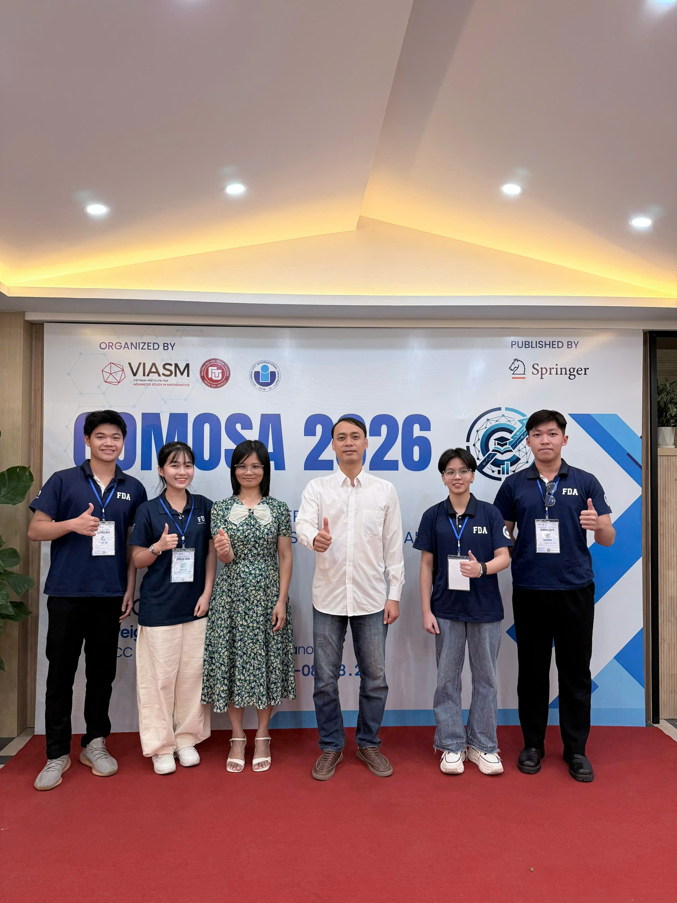
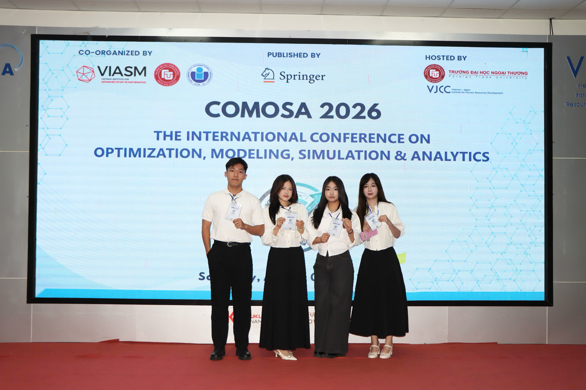
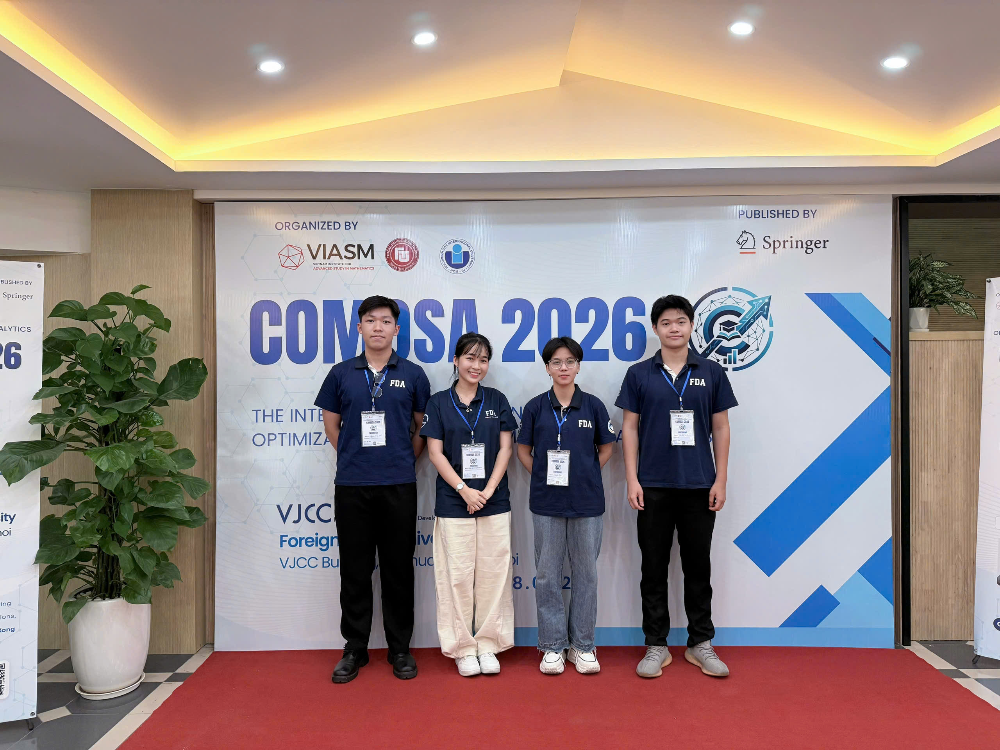
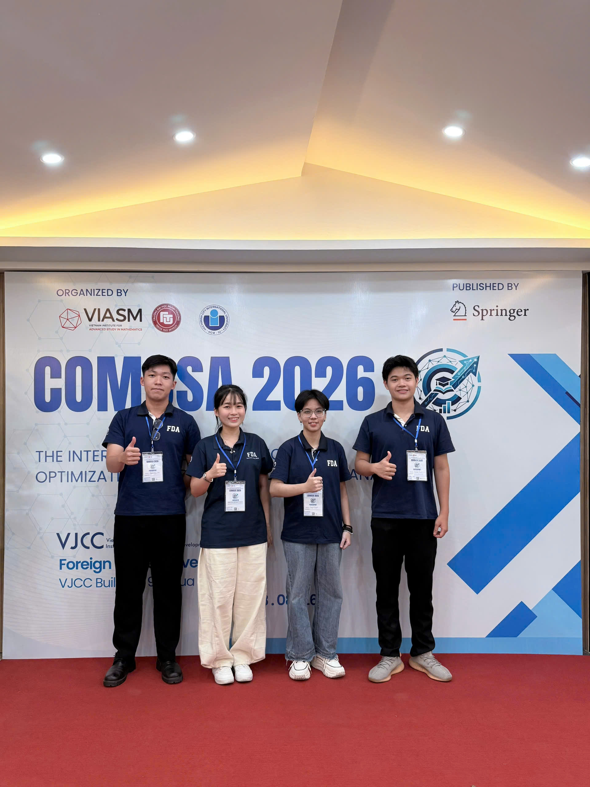

NEU Research Teams Present Two Papers at COMOSA 2026 International Conference in Hanoi
Members of the Bio Research Team and Stress Research Team participated in the two-day international symposium at Foreign Trade University, with accepted papers set for publication in Springer's Optimization and Its Applications series.

Members of the Bio Research Team (BRT) and Stress Research Team (SRT) from the Faculty of Data Science and Artificial Intelligence, National Economics University (NEU), attended and presented two peer-reviewed research papers at the International Conference on Optimization, Modeling, Simulation, and Analytics — COMOSA 2026 — held on August 7–8, 2026 at the Vietnam–Japan Institute for Human Resources Development (VJCC), Foreign Trade University, Hanoi, Vietnam.
COMOSA is a prestigious interdisciplinary forum co-organized by the Vietnam Institute for Advanced Study in Mathematics (VIASM), Foreign Trade University, and the International University (VNU-HCM). This year's edition gathered scientists, lecturers, and doctoral researchers from across Vietnam and abroad, spanning four research domains: optimization, modeling, simulation, and data analytics. Over 40 papers were presented, with selected works accepted for publication by Springer in the Optimization and Its Applications series. International keynote speakers included Professor Daniel Zhuoyu Long (The Chinese University of Hong Kong) and Professor Yenming J. Chen (National Kaohsiung University of Science and Technology, Taiwan).

The Stress Research Team presented a cross-disciplinary study at the intersection of computational finance, agent-based modeling, and large language models. Working alongside members of the Bio Research Team, the SRT team addressed one of the most elusive phenomena in cryptocurrency markets: the Bitcoin flash crash.
Behavioral Prior Elicitation via LLM for Heterogeneous-Agent Bitcoin Flash-Crash Simulation
This study proposes a four-stage pipeline that constructs a reproducible 100 ms BTCUSDT flash-crash event panel from 66 detected events, elicits behavioral priors for four agent archetypes using an offline large language model (Mistral-7B) conditioned on empirical microstructure anchors, and instantiates a heterogeneous limit order book simulator with the validated priors. Across 500 simulation runs, LLM-elicited priors produced a crash rate of 0.176 versus 0.008 under uninformative uniform priors. Counterfactual analysis using DAGMA and DirectLiNGAM identified leverage amplification as the key local crash-amplification channel — reducing it by one standard deviation lowered the predicted crash rate by 22.8%.
"Empirically anchored LLM elicitation can improve simulator fidelity and help identify plausible crash-amplification mechanisms in a controlled synthetic environment."
— From the paper abstractThe Bio Research Team presented a clinical machine learning study targeting early risk stratification of postoperative acute kidney injury — a frequent and serious complication after major non-cardiac surgery. The work was distinguished by its rigorous leakage-aware evaluation design and its honest characterisation of what waveform-only deep learning can and cannot achieve under strict early prediction constraints.
A Leakage-Aware Multimodal Evaluation Framework for Early Intraoperative Acute Kidney Injury Prediction
This study proposes SynerT, a hybrid causal TCN and dilated recurrent backbone for encoding intraoperative waveform trajectories within the first 60 minutes of surgery. Two extensions — SynerT-MM (late-fusion multimodal) and SynerT-Stack (leakage-safe stacked ensemble) — are further developed and evaluated on VitalDB (2,413 cases; 7.46% AKI prevalence). SynerT-Stack achieved the best overall performance (AUROC 0.773, AUPRC 0.252, F1-max 0.367), and cross-fitted Platt recalibration corrected calibration defects before decision-curve analysis confirmed the model's clinical utility across low-to-intermediate risk thresholds.


Both teams are supervised by Dr. Trong-Nghia Nguyen, Faculty of Data Science and Artificial Intelligence, National Economics University. The accepted papers will appear in the Springer Optimization and Its Applications series following the conference.
The participation of both BRT and SRT at COMOSA 2026 reflects the lab's growing output across interdisciplinary applied research — spanning clinical AI, computational finance, and physiological signal analysis — and its commitment to disseminating work through peer-reviewed international venues. The full research blogs for each paper are available on the lab website.